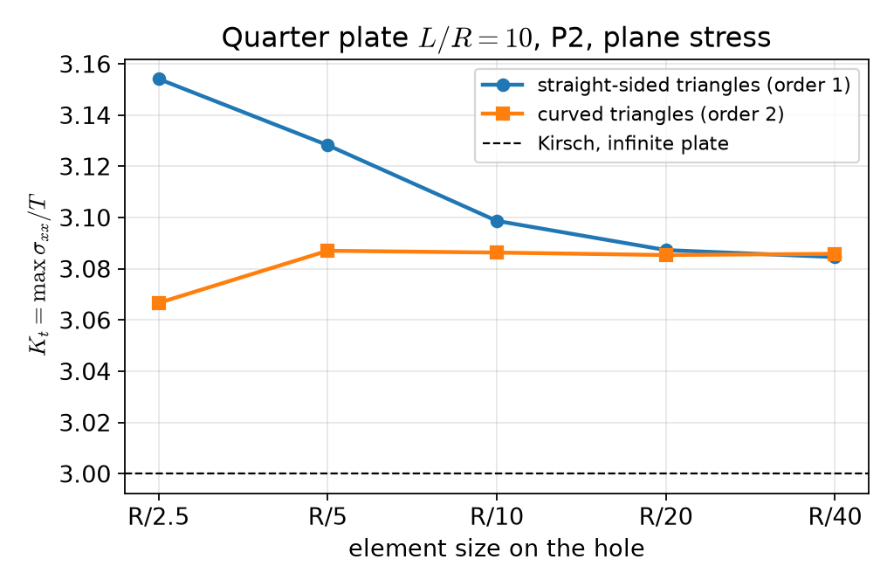
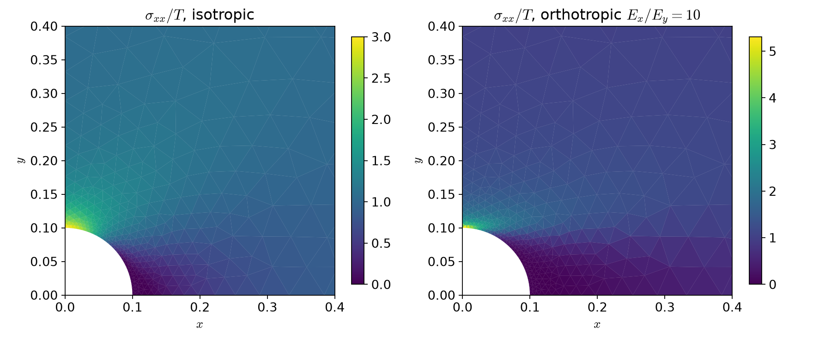
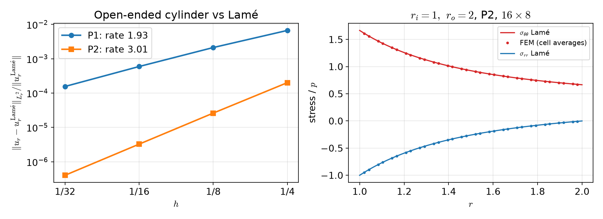

AI-based Materials and Process Simulation II
Week 02 — Plane Stress · Orthotropic Materials · Stress Concentration · Axisymmetry
Process Systems Laboratory
Department of Chemical and Biomolecular Engineering, SeoulTech
Today
| Part | Topic | Time |
|---|---|---|
| Quiz on Week 1 (closed-AI) | 10 min | |
| A | Theory — plane strain and plane stress, orthotropic materials, stress concentration, axisymmetry, Lamé | 50 min |
| B | Plane problems in code — Gmsh geometry, symmetry conditions, stress recovery, K_t | 45 min |
| C | Axisymmetry in code — the r-weighted form, verification against Lamé | 35 min |
| D | LLM pitfalls in 2D models · assignment | 20 min |
Lab notebook: W02_lab.ipynb · Assignment: W02_HW2.ipynb (due before Week 3)
Week 1 in one slide
- Weak form a(\mathbf u,\mathbf v)=\int\boldsymbol\sigma(\mathbf u):\boldsymbol\varepsilon(\mathbf v)=\ell(\mathbf v); Korn needs a clamp or \ell(\mathbf r)=0.
- P1 tetrahedra lock in bending; P2 does not.
- CG + GAMG needs the rigid-body near-nullspace; reactions from K\mathbf u_h-\mathbf f, not from \int\boldsymbol\sigma\mathbf n.
- Hyperelasticity: energy →
derivative→ Newton with load steps; print the converged reason.
Today: three ways to reduce a 3D body to a 2D computation — and how each reduction can be checked.
Part A · Plane problems, orthotropy, axisymmetry
Two plane problems
A body thin or long in z, loaded in the (x,y) plane. Only u_x,u_y are unknowns; the zz components follow.
Plane strain (long body, z fixed): \varepsilon_{zz}=0, \sigma_{zz}=\lambda(\varepsilon_{xx}+\varepsilon_{yy})\ne0 , in-plane law with \lambda and \mu — the Week 1 law in 2D.
Plane stress (thin plate): \sigma_{zz}=\sigma_{xz}=\sigma_{yz}=0, \varepsilon_{zz}=-\frac{\lambda}{\lambda+2\mu}(\varepsilon_{xx}+\varepsilon_{yy})\ne0 .
Plane stress = plane strain law with a modified Lamé constant
\boldsymbol\sigma=2\mu\boldsymbol\varepsilon+\lambda^*(\operatorname{tr}\boldsymbol\varepsilon)\mathbf I_2,\qquad \lambda^*=\dfrac{2\lambda\mu}{\lambda+2\mu}=\dfrac{E\nu}{1-\nu^2}\quad(\lambda=\dfrac{E\nu}{(1+\nu)(1-2\nu)})
For \nu=0.3: \lambda^*/\lambda=(1-2\nu)/(1-\nu)=0.571. One line of code differs — and nothing warns you if it is the wrong line.
Orthotropic materials
Three mirror planes of symmetry (wood, rolled sheet, unidirectional fiber composite). In plane stress, in the material axes (1,2), Voigt notation with engineering shear strain \gamma_{12}=2\varepsilon_{12}: \begin{pmatrix}\varepsilon_{11}\\\varepsilon_{22}\\\gamma_{12}\end{pmatrix}= \underbrace{\begin{pmatrix}1/E_1&-\nu_{21}/E_2&0\\-\nu_{12}/E_1&1/E_2&0\\0&0&1/G_{12}\end{pmatrix}}_{\mathbf S\ \text{(compliance)}} \begin{pmatrix}\sigma_{11}\\\sigma_{22}\\\sigma_{12}\end{pmatrix},\qquad \mathbf C=\mathbf S^{-1}.
- Four independent constants E_1,E_2,\nu_{12},G_{12}; \nu_{21} follows from the symmetry of \mathbf S (HW2 Q1).
- Write the data as \mathbf S (that is what is measured) and invert numerically — fewer places for a typo than a hand-inverted \mathbf C.
Material axes at an angle
Fibers at angle \theta to x: rotation \mathbf Q=\begin{pmatrix}\cos\theta&-\sin\theta\\\sin\theta&\cos\theta\end{pmatrix} (columns = material axes).
Rotate in, apply \mathbf C, rotate out
\boldsymbol\varepsilon'=\mathbf Q^\top\boldsymbol\varepsilon\,\mathbf Q,\qquad \boldsymbol\sigma'=\mathbf C\,\boldsymbol\varepsilon'\ \text{(Voigt)},\qquad \boldsymbol\sigma=\mathbf Q\,\boldsymbol\sigma'\,\mathbf Q^\top
No 3\times3 transformation matrices with factors 2 to get wrong: the tensor rotation is two matrix products in UFL. For \theta\ne0°,90° the stress in (x,y) couples extension and shear.
Stress concentration at a hole
Infinite plate, circular hole of radius R, remote tension T along x. Kirsch (isotropic) on the hole, polar angle \phi: \sigma_{\phi\phi}(R,\phi)=T\,(1-2\cos2\phi):\qquad \sigma_{\max}=3T\ \text{at}\ \phi=90°,\qquad -T\ \text{at}\ \phi=0 .
Lekhnitskii (orthotropic, load along material axis 1)
K_t=1+\sqrt{2\big(\sqrt{E_1/E_2}-\nu_{12}\big)+E_1/G_{12}}\qquad (isotropic: 1+\sqrt{2(1-\nu)+2(1+\nu)}=3)
Fiber composite E_1=200, E_2=20 GPa, \nu_{12}=0.3, G_{12}=10 GPa: load along the fibers K_t=6.07, across the fibers 2.60. Both are infinite-plate values: a finite plate gives something else.
Axisymmetry
Body of revolution, loads and supports independent of \theta, no twist: \mathbf u=u_r(r,z)\,\mathbf e_r+u_z(r,z)\,\mathbf e_z. Computational domain: the half-plane section (r,z), r\ge0.
\boldsymbol\varepsilon=\begin{pmatrix}\partial_ru_r&0&\tfrac12(\partial_zu_r+\partial_ru_z)\\0&u_r/r&0\\\tfrac12(\partial_zu_r+\partial_ru_z)&0&\partial_zu_z\end{pmatrix}\quad(rr,\ \theta\theta,\ zz)
- The hoop strain \varepsilon_{\theta\theta}=u_r/r: a radial displacement stretches the circumference. No hoop displacement, but a hoop stress.
- The hoop direction is not free: the law is the 3D law, \boldsymbol\sigma=2\mu\boldsymbol\varepsilon+\lambda(\operatorname{tr}\boldsymbol\varepsilon)\mathbf I_3.
The r-weighted weak form
Volume element dV=r\,dr\,d\theta\,dz, surface element dS=r\,d\theta\,ds: 2\pi\!\int_{\Omega_{rz}}\!\boldsymbol\sigma(\mathbf u):\boldsymbol\varepsilon(\mathbf v)\,r\,dr\,dz =2\pi\!\int_{\Omega_{rz}}\!\mathbf f\cdot\mathbf v\,r\,dr\,dz+2\pi\!\int_{\Gamma_N}\!\mathbf t\cdot\mathbf v\,r\,ds .
- The 2\pi cancels in the equations; it does not cancel in totals: a force on a ring surface is 2\pi\int t\,r\,ds.
- The weight r vanishes on the axis; what this means for u_r there is HW2 Q3.
Thick cylinder: Lamé
Pressure p_i inside (r_i), p_o outside (r_o). Away from the ends: \sigma_{rr}=A-\frac{B}{r^2},\quad \sigma_{\theta\theta}=A+\frac{B}{r^2},\qquad A=\frac{p_ir_i^2-p_or_o^2}{r_o^2-r_i^2},\quad B=\frac{(p_i-p_o)r_i^2r_o^2}{r_o^2-r_i^2} u_r=r\,\varepsilon_{\theta\theta}=\frac rE\big[\sigma_{\theta\theta}-\nu(\sigma_{rr}+\sigma_{zz})\big]
| End condition | \sigma_{zz} | u_r(r_i) for r_i=1,r_o=2,p_i=1,E=1,\nu=0.3 |
|---|---|---|
| open ends (free top) | 0 | 1.9667 |
| closed ends (caps carry p\pi r_i^2) | A | 1.8667 |
| plane strain (\varepsilon_{zz}=0) | 2\nu A | 1.9067 |
Stresses \sigma_{rr},\sigma_{\theta\theta} are the same; u_r differs by up to 5 %. With \sigma_{zz} and \varepsilon_{zz} constant, each is an exact 3D solution (the open-end one is not an approximation, and not “plane stress” except in name: \sigma_{zz}=0).
Part B · Plane problems in code
Math → code (hole.py)
| Mathematics | DOLFINx 0.11 |
|---|---|
| \lambda^*=2\lambda\mu/(\lambda+2\mu) | lam = 2*lmbda*mu/(lmbda + 2*mu) |
| \boldsymbol\sigma=2\mu\boldsymbol\varepsilon+\lambda^*\operatorname{tr}\boldsymbol\varepsilon\,\mathbf I_2 | 2*mu*eps(u) + lam*ufl.tr(eps(u))*ufl.Identity(2) |
| \mathbf C=\mathbf S^{-1} | C = ufl.as_matrix(np.linalg.inv(S).tolist()) |
| \boldsymbol\varepsilon'=\mathbf Q^\top\boldsymbol\varepsilon\mathbf Q, Voigt | e = Q.T*eps(u)*Q; ufl.as_vector([e[0,0], e[1,1], 2*e[0,1]]) |
| \boldsymbol\sigma=\mathbf Q\boldsymbol\sigma'\mathbf Q^\top | Q*ufl.as_matrix([[s[0], s[2]], [s[2], s[1]]])*Q.T |
| u_x=0 on x=0 | fem.dirichletbc(0.0, fem.locate_dofs_topological(V.sub(0), 1, ft.find(1)), V.sub(0)) |
| \int_{\Gamma_3}\mathbf t\cdot\mathbf v | ufl.dot(t, v)*ds(3) with ds = ufl.Measure("ds", msh, subdomain_data=ft) |
fem.Constant for material data works in 0.11 (an earlier version of these notes avoided it “because of JIT errors” — not reproducible).
Geometry with Gmsh
gmsh.initialize()
if comm.rank == 0: # build the model on one rank only
s = occ.addRectangle(0, 0, 0, L, L); d = occ.addDisk(0, 0, 0, R, R)
occ.cut([(2, s)], [(2, d)]); occ.synchronize() # plate minus disk; object and tool are removed
... addPhysicalGroup(1, curves, tag) for left/bottom/right/top/hole (sorted by center of mass)
... size field: h_hole on the hole -> h_far at distance L/2
gmsh.model.mesh.generate(2); gmsh.model.mesh.setOrder(2) # curved triangles
md = gmshio.model_to_mesh(gmsh.model, comm, 0, gdim=2) # MeshData: .mesh, .facet_tags
gmsh.finalize()- Physical groups become
md.facet_tags— nolocate_entitiesfor the curved hole. - First test of any CAD geometry: the area. \int_\Omega1\,dx vs L^2-\pi R^2/4: 0.9921460185 vs 0.9921460184.
Symmetry and stress recovery
Quarter model of the plate: on x=0 the mirror image requires u_x=0 and zero shear traction — a roller, imposed on one component: V.sub(0) on x=0, V.sub(1) on y=0. The shear-free part is natural (nothing to do).
K_t=\max\sigma_{xx}/T needs the stress of the discrete solution:
Discontinuous, cell-wise: no smoothing that would cut the peak. The maximum over ranks needs allreduce(..., MAX).
Kirsch: does the hole geometry matter?

Straight-sided triangles: 3.154 → 3.128 → 3.099 → 3.087 → 3.085 — the polygon’s corners raise the stress. Curved (order 2): 3.087 already at R/5, then 3.086, 3.085, 3.086.
Converged — but not to 3
| Quarter plate, P2, curved, h=R/20 | K_t | \max\lvert\mathbf u\rvert |
|---|---|---|
| plane stress, L/R=10 | 3.0854 | 1.0518 |
| plane strain, L/R=10 | 3.0847 | 0.9571 |
| plane stress, L/R=20 | 3.0208 | |
| plane stress, L/R=40 | 3.0047 |
- Same stress in plane stress and plane strain (tractions only: the 2D stress field does not depend on E,\nu); different displacement.
- 3.085 is the converged value of a finite plate; Kirsch’s 3 is reached only as L/R\to\infty. Two sources of difference from a reference: discretization (mesh study) and model (size study). Report both.
Orthotropic plate

L/R=10: fibers along the load K_t=6.486 (Lekhnitskii 6.072), across 2.654 (2.604). Stiff fibers pull the load past the hole: higher, narrower peak.
Part C · Axisymmetry in code
Math → code (axi.py)
| Mathematics | DOLFINx 0.11 |
|---|---|
| r | r = ufl.SpatialCoordinate(msh)[0] (the mesh is in (r,z)) |
| \boldsymbol\varepsilon (3\times3, with u_r/r) | ufl.as_matrix([[u[0].dx(0), 0, g], [0, u[0]/r, 0], [g, 0, u[1].dx(1)]]) |
| \boldsymbol\sigma (3D law) | 2*mu*e + lmbda*ufl.tr(e)*ufl.Identity(3) |
| \int\boldsymbol\sigma:\boldsymbol\varepsilon(\mathbf v)\,r | ufl.inner(sigma_axi(u, r), eps_axi(v, r))*r*ufl.dx |
| \int_{\Gamma_N}\mathbf t\cdot\mathbf v\,r | ufl.dot(t, v)*r*ds(tag) |
| u_z=0 on z=0 | fem.dirichletbc(0.0, fem.locate_dofs_topological(V.sub(1), 1, ft.find(3)), V.sub(1)) |
Writing \boldsymbol\varepsilon as the full 3\times3 tensor keeps the Week 1 \boldsymbol\sigma(\boldsymbol\varepsilon) unchanged — no 4\times4 Voigt matrix to derive.
The thick cylinder, open ends
Only one support: the (r,z) model has fewer rigid-body motions than the 3D body (which ones? HW2 Q1).
Verification against Lamé

P1: 6.7\times10^{-3}\to1.6\times10^{-4}, rate → 1.93; P2: 2.0\times10^{-4}\to4.0\times10^{-7}, rate → 3.01. Mean u_r(r_i), P2 16\times8: 1.966666 (Lamé, open ends: 1.966667).
When the reference is for another problem
The rate is the test, not the size of the error:
- right model, right reference: the error falls at rate k+1 (P2: 3.01);
- right model, reference of another end condition: the error stalls at a constant on every mesh (lab §5);
- a few % “error” on a fine mesh is never “discretization error” in a smooth problem like this one.
The same holds for the plate: Kirsch’s 3 vs 3.085 is a model difference, which a size study (not a mesh study) shows.
Part D · LLM pitfalls in 2D models · assignment
What goes wrong in plane and axisymmetric codes
| Pitfall | Measured symptom (this week) |
|---|---|
Gmsh boolean that keeps the tool (intersect(..., removeTool=False) then cut): the leftover square is meshed too |
195 of 2 526 cells inside the hole, area 1.0022 instead of 0.9921; “K_t” 2.77 |
| von Mises in plane stress from the 2D deviator \boldsymbol\sigma-\tfrac13\operatorname{tr}\boldsymbol\sigma\,\mathbf I_2 (forgets s_{zz}) | equibiaxial plate: 1.84 instead of 2.02 |
| Comparing a biaxial load case with the uniaxial Kirsch value 3 | the biaxial reference is 2 (FEM 2.02) |
| Straight-sided triangles on a curved boundary, coarse mesh | K_t 3.154 at R/2.5 (converged 3.085) |
| An infinite-plate formula taken as the answer for a finite model | 3.085 / 6.486 at L/R=10 vs 3 / 6.072 |
The first three rows are from an earlier version of this very example. The fix for all of them: area, a load-case-matched reference, a mesh study, a size study.
Prompting for a 2D model
- State the reduction: plane stress, plane strain, or axisymmetric — and the condition in z (free, fixed, closed ends).
- State the material data as measured: E_1,E_2,\nu_{12},G_{12} and the fiber angle, and ask for \mathbf C=\mathbf S^{-1} computed numerically.
- Ask for the checks with the code: mesh area, a reduction test (E_1=E_2 gives the isotropic result), an exact solution with its convergence rate, a force balance.
- Run the checks before reading the physics.
Assignment HW2 (due before Week 3)
| Q | Topic | Points |
|---|---|---|
| 1 | Plane stress and \lambda^*, orthotropic compliance, rigid motions and the axis in (r,z) | 20 |
| 2 | Orthotropic plate with a hole: plate size, fiber angle, quarter vs full model | 40 |
| 3 | Rotating shaft: the axis r=0, stresses on the axis, the axial force | 20 |
| 4 | Debugging an LLM-generated closed-end pressure-vessel script | 20 |
Week 3 starts with a 10-minute quiz on today’s material (closed-AI).
Summary
| Concept | Key point | DOLFINx 0.11 |
|---|---|---|
| Plane stress | \lambda\to\lambda^*=2\lambda\mu/(\lambda+2\mu) | one line in sigma |
| Orthotropy | \mathbf C=\mathbf S^{-1}; rotate \boldsymbol\varepsilon in, \boldsymbol\sigma out | ufl.as_matrix, Q.T*eps*Q |
| Gmsh | build on rank 0, physical groups → tags; check the area | gmshio.model_to_mesh(...) → MeshData |
| Stress concentration | DG stress, max over ranks; mesh study and size study | fem.Expression, allreduce(MAX) |
| Axisymmetry | 3\times3 strain with u_r/r, r-weighted form | ... * r * ufl.dx |
| Verification | rate against an exact solution of the same problem | Lamé (3 end conditions) |
Next week: generalized plane strain, thermoelasticity (one-way and fully coupled), static condensation.